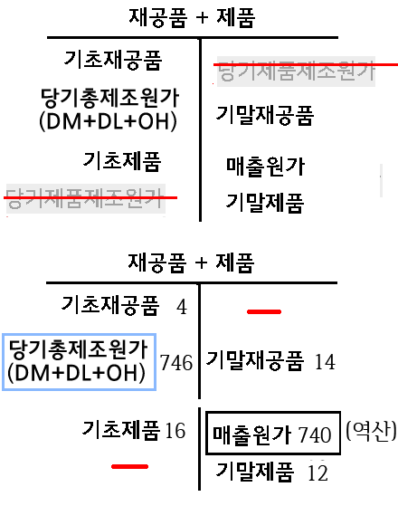

22년 국가직9급 필기[4.2(토)]
(접수: 2.10(목)~2.12)
(경우에 따라 업데이트 알람이 표시되지 않을 수 있어요)
(어플의 나의버전이 공지버전보다 낮으면 수동으로 업데이트하셔야 해요)
공지.정오.오류
[국9_19년.11번](T계정 풀이를 추가)

(T계정으로 풀경우 당기제품제조원가 구할 필요 없음)
[국9_15년.6번](분개)
매입 300(매입채무로 잘못 표시)
---
[서9.17년.11번](분개)
(차) 처분이익 10(처분손실로 잘못 표시)
---
[측정기준]
_보강적질적특성 중 적시성은 측정에 특별한 영향을 미치지 않는다.(추가해야함)
[공정가치]
거래원가가 존재하는 경우 공정가치를 측정하기 위하여 사용되는 주된 시장의 가격에서 거래원가는 조정하지 않는다(cta.16)
ios_account_ver:1.36
[주요키워드]
iPad에서 스크롤이 제대로 되지 않는 버그가 있어 개선함
---
일부해설 수정